int[] a0;
int[] a1 = new int[2];
int[] a2 = { 1, 2, 3 };
int a3[] = { 1, 2, 3 };
Object[] a4 = { new Object(), Boolean.TRUE, 1 };
int[][] a5 = new int[3][3];Structures de données en Java
Structure de données
A data structure is a particular way of organizing data in a computer so that it can be used efficiently
https://en.wikipedia.org/wiki/Data_structure
— Wikipedia
— Wikipedia
Quelques structures de données Java
Tableau
Liste
Set
Dictionnaire
Tableau
Taille fixe
Eléments stockés de manière continue en mémoire
Accès
Accès à un élément par son index
Opérateur
[]ArrayIndexOutOfBoundsExceptionsi l’index n’existe pas
Accès à la taille
Attribut
length
int[] a = { 1, 2, 3 };
int first = a[0];
int size = a.length;
int[] b = new int[3];
b[0] = 1;
b[2] = 3;java.util.Arrays
Recherche d’élément
Test d’égalité
Tri
Remplissage
Copie
etc.
Liste
Collection ordonnée d’éléments
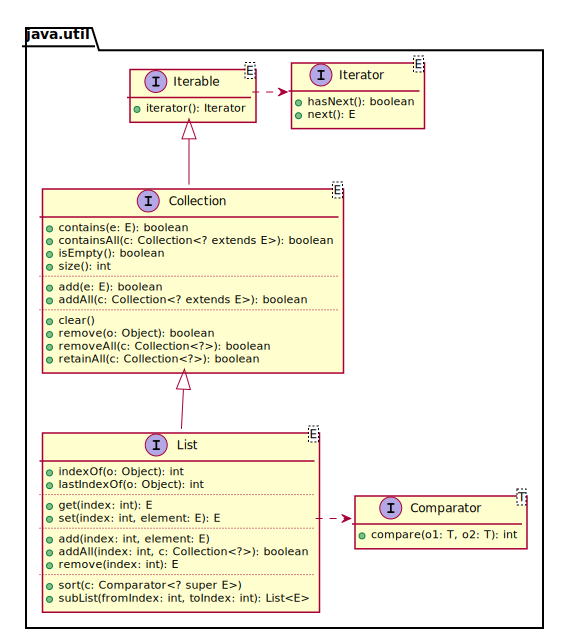
Iterator
Permet le parcours séquentiel des éléments d’une collection
Concept similaire à celui de curseur
List list = Arrays.asList("apple", "orange", "pear");
Iterator iterator = list.iterator();
while (iterator.hasNext()) {
Object o = iterator.next();
String s = (String) o;
// Do something with s
}For-each
Pour les classes qui implémentent
Iterable
List list = Arrays.asList("apple", "orange", "pear");
for (Object o : list) {
String s = (String) o;
// Do something with s
}Implémentations de List
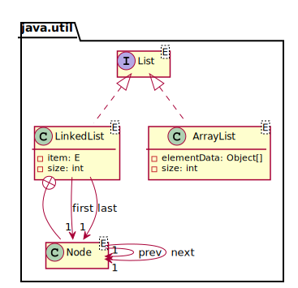
Implémentations de List
- ArrayList
Basée sur un tableau
- LinkedList
Basée sur des noeuds liés parcourables dans les deux sens
Liste doublement chaînée
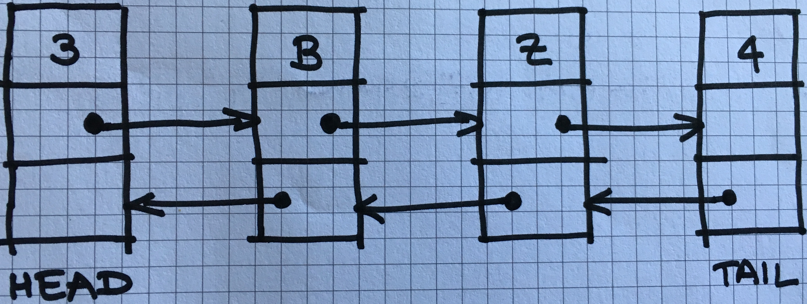
Ajout d’un élément en fin de liste
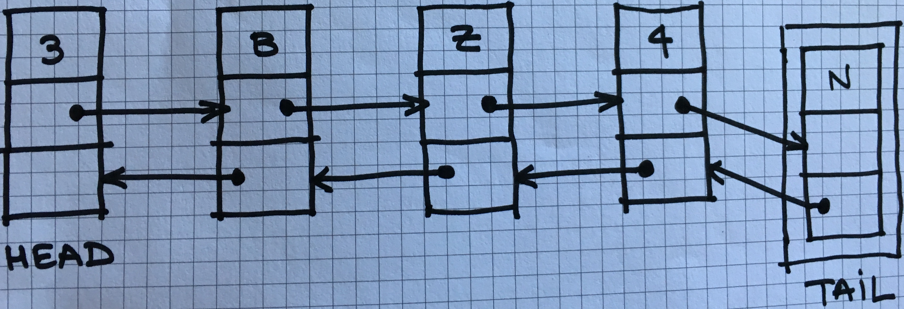
Ajout d’élément
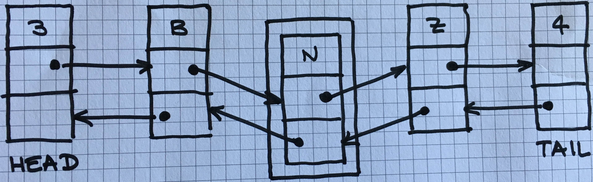
Complexité algorithmique
La théorie de la complexité est un domaine des mathématiques qui étudie formellement la quantité de ressources (temps et/ou espace mémoire) nécessaire pour résoudre un problème algorithmique au moyen de l’exécution d’un algorithme.
http://bit.ly/2wdY0fF
— Wikipedia
— Wikipedia
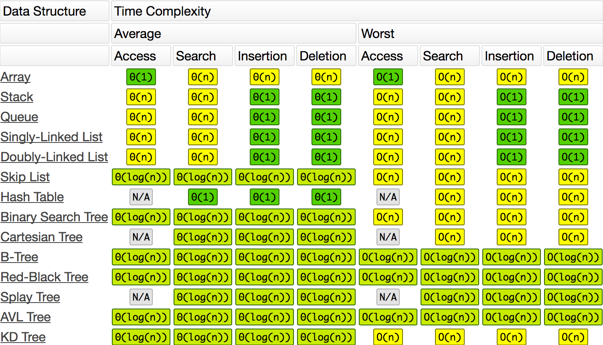
Liste basée sur un tableau
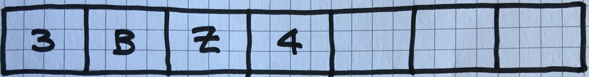
Ajout d’un élément en fin de liste
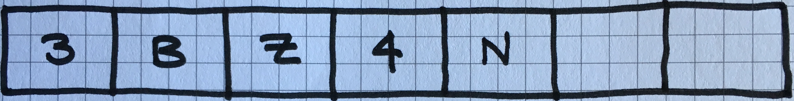
Ajout d’élément
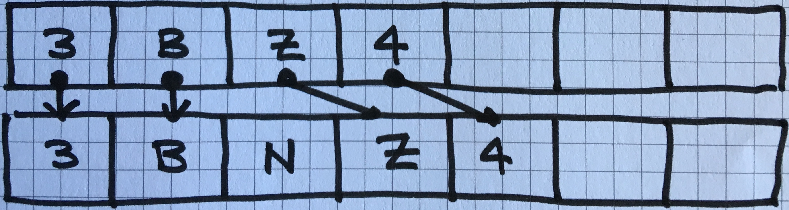
Tri
A sorting algorithm is an algorithm that puts elements of a list in a certain order.
https://en.wikipedia.org/wiki/Sorting_algorithm
— Wikipedia
— Wikipedia
Ordre
Ordre "naturel" des éléments
Ordre explicite
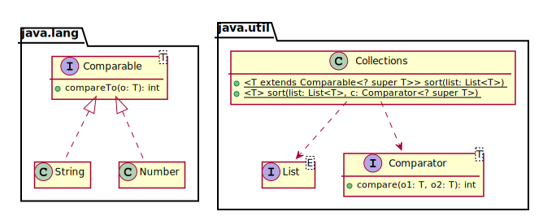
Quel algorithme de tri ?
Dépend du JRE
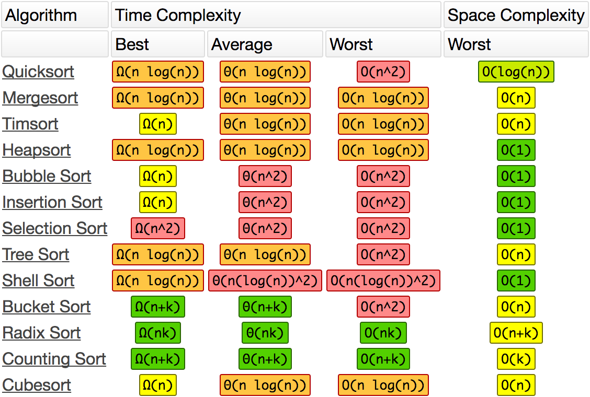
Comparable
Compare l’objet courant this avec un autre objet that et retourne :
Un entier négatif si
this < thatUn entier positif si
this > that0sithis = that
Classes comparables
StringNumber(Integer,Float, etc.)DateFileetc.
Comparateur
Compare deux arguments x et y et retourne :
Un entier négatif si
x < yUn entier positif si
x > y0six = y
Comparateur d’entiers
public class IntegerComparator implements Comparator {
@Override
public int compare(Object x, Object y) {
if (!(x instanceof Integer)) {
throw new IllegalArgumentException("x must be an int");
}
if (!(y instanceof Integer)) {
throw new IllegalArgumentException("y must be an int");
}
int xInt = (Integer) x;
int yInt = (Integer) y;
return xInt - yInt;
}
}Set
Collection dé-doublonnée d’éléments
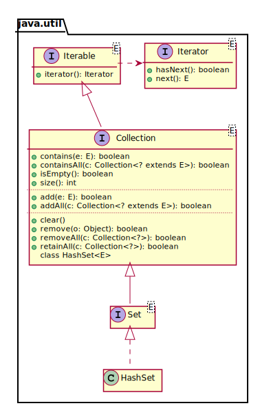
Exemple
Collection collection = Arrays.asList("One", "One", "Two");
Set set = new HashSet(collection);
System.out.println(set.size());Un autre exemple
public class Wrapper {
private final int id;
public Wrapper(int id) {
this.id = id;
}
}
Collection collection = Arrays.asList(new Wrapper(1),
new Wrapper(1),
new Wrapper(2));
Set set = new HashSet(collection);
System.out.println(set.size());Définition de doublon
Deux objets a et b sont considérés des doublons si a.equals(b)
Méthode equals
Reflexive | ∀ x != null, |
Symmetric | ∀ x, y != null, |
Transitive | ∀ x, y, z != null, |
Consistent | |
Null | ∀ x != null, |
Application
Object a = new Object();
Object b = new Object();
System.out.println(a == a);
System.out.println(a == b);
System.out.println(a.equals(a));
System.out.println(a.equals(b));Cas particulier des String
String one1 = "One";
String one2 = "One";
String two = "Two";
System.out.println(one1 == one1);
System.out.println(one1 == one2);
System.out.println(one1 == two);
System.out.println(one1.equals(one1));
System.out.println(one1.equals(one2));
System.out.println(one1.equals(two));Implémentation d’equals()
public class Wrapper { // Attribute & constructor
@Override
public boolean equals(Object o) {
return o instanceof Wrapper && this.id == ((Wrapper) o).id;
}
}
Wrapper w1 = new Wrapper(1);
Wrapper w11 = new Wrapper(1);
Wrapper w2 = new Wrapper(2);
System.out.println(w1.equals(w1));
System.out.println(w1.equals(w11));
System.out.println(w1.equals(w2));Et avec le set ?
Collection collection = Arrays.asList(new Wrapper(1),
new Wrapper(1),
new Wrapper(2));
Set set = new HashSet(collection);
System.out.println(set.size());Méthode hashCode()
Consistent (during the same run of the JVM)
a.equals(b)⇒
a.hashCode() == b.hashCode()
Implémentation d’hashCode()
public class Wrapper { // Attribute & constructor
@Override public int hashCode() { return this.id; }
@Override
public boolean equals(Object o) {
return o instanceof Wrapper && this.id == ((Wrapper) o).id;
}
}
Collection coll = Arrays.asList(
new Wrapper(1), new Wrapper(1), new Wrapper(2));
Set set = new HashSet(coll);
System.out.println(set.size());Dictionnaire
Un dictionnaire est une structure de données associant à un ensemble de clefs un ensemble correspondant de valeurs. Chaque clef est associée à une valeur.
— https://fr.wikipedia.org/wiki/Tableau_associatif

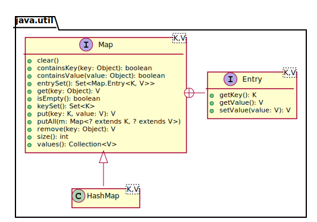
Hash Map

Capacité initiale & facteur de chargement